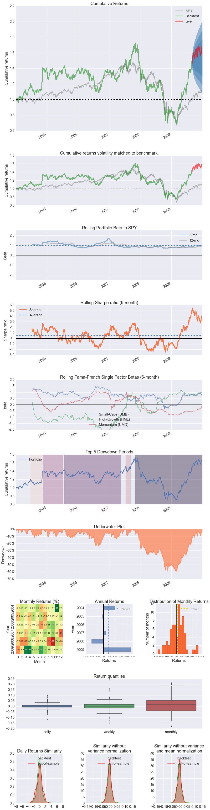
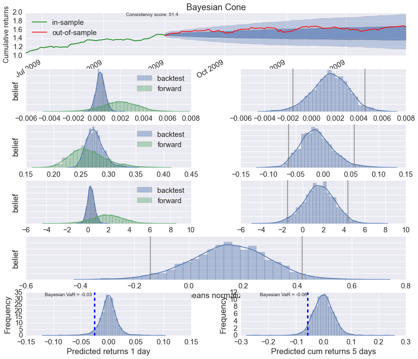

Slippage Analysis
When evaluating a strategy using backtest results, we often want to know how sensitive it's performance is to implementation shortfall or slippage. pyfolio's transactions tear sheet can create "slippage sweep" plots that display strategy performance under various slippage assumptions.
Additional per-dollar slippage can be applied to returns before running a tear sheet by providing create_full_tearsheet with the a level of slippage in basis points (1% == 100 basis points) as the slippage keyword argument. The slippage plots in the transactions tear sheet will display returns with slippage added to the unadjusted returns.
For example, if you run a backtest with no transaction costs and call create_full_tearsheet(returns, positions, transactions, slippage=5), 5 bps of slippage will be applied to returns before all plots and figures, with the exception of the slippage sweep plots, are generated.
It is important to emphasize that the slippage plots will display performance under additional slippage. If the passed performance data already has slippage applied, the 5 bps slippage equity curve will represent performance under 5 bps of slippage in addition to the already simulated slippage penalty. If slippage is already applied to the performance results, pass slippage=0 to the create_full_tearsheet to trigger the creation of the additional slippage sweep plots without applying any additional slippage to the returns time series used throughout the rest of the tear sheet.
%matplotlib inline
import pyfolio as pf
import gzip
import pandas as pd
import pymc3 as pm
pm?
transactions = pd.read_csv(gzip.open('../tests/test_data/test_txn.csv.gz'),
index_col=0, parse_dates=0)
positions = pd.read_csv(gzip.open('../tests/test_data/test_pos.csv.gz'),
index_col=0, parse_dates=0)
returns = pd.read_csv(gzip.open('../tests/test_data/test_returns.csv.gz'),
index_col=0, parse_dates=0, header=None)[1]
gross_lev = pd.read_csv(gzip.open('../tests/test_data/test_gross_lev.csv.gz'),
index_col=0, parse_dates=0, header=None)[1]
returns.index = returns.index.tz_localize("UTC")
positions.index = positions.index.tz_localize("UTC")
transactions.index = transactions.index.tz_localize("UTC")
gross_lev.index = gross_lev.index.tz_localize("UTC")
sect_map = {'COST': 'Consumer Goods',
'INTC': 'Technology',
'CERN': 'Healthcare',
'GPS': 'Technology',
'MMM': 'Construction',
'DELL': 'Technology',
'AMD': 'Technology'}
reload(pf.tears)
<module 'pyfolio.tears' from '/Users/acampbell/repo/pyfolio/pyfolio/tears.pyc'>
pf.create_full_tear_sheet(returns, positions, transactions, gross_lev=gross_lev,
slippage=0, sector_mappings=sect_map, live_start_date='2009-9-1', bayesian=True)
Entire data start date: 2004-01-09
Entire data end date: 2009-12-31
Out-of-Sample Months: 4
Backtest Months: 67
Backtest Out_of_Sample All_History
annual_return 0.07 0.44 0.09
annual_volatility 0.27 0.21 0.26
sharpe_ratio 0.40 1.83 0.45
calmar_ratio 0.12 6.20 0.15
stability 0.05 0.41 0.00
max_drawdown -0.60 -0.07 -0.60
omega_ratio 1.07 1.35 1.09
sortino_ratio 0.58 2.72 0.66
skewness 0.16 -0.19 0.14
kurtosis 5.95 0.39 5.88
information_ratio 0.03 0.01 0.03
alpha 0.08 -0.04 0.08
beta 0.82 1.17 0.83
Worst Drawdown Periods
net drawdown in % peak date valley date recovery date duration
0 60.39 2007-11-06 2009-03-09 NaT NaN
1 24.10 2005-07-28 2006-09-07 2007-05-22 474
4 11.89 2004-06-25 2004-08-12 2004-11-05 96
2 10.87 2004-11-15 2005-04-18 2005-07-14 174
3 9.51 2007-07-16 2007-08-06 2007-09-13 44
2-sigma returns daily -0.033
2-sigma returns weekly -0.068
dtype: float64

Stress Events
mean min max
Lehmann -0.003 -0.047 0.041
Aug07 0.003 -0.030 0.029
Mar08 -0.004 -0.033 0.034
Sept08 -0.007 -0.044 0.041
2009Q1 -0.004 -0.050 0.034
2009Q2 0.007 -0.040 0.061
Low Volatility Bull Market 0.000 -0.061 0.064
GFC Crash -0.001 -0.118 0.101
Recovery 0.004 -0.040 0.060

Top 10 long positions of all time (and max%)
['COST' 'DELL' 'CERN' 'MMM' 'INTC' 'AMD' 'GPS']
[ 0.9 0.857 0.835 0.821 0.786 0.758 0.622]
Top 10 short positions of all time (and max%)
['AMD' 'DELL' 'CERN' 'MMM' 'GPS' 'INTC' 'COST']
[-0.301 -0.266 -0.255 -0.226 -0.201 -0.185 -0.164]
Top 10 positions of all time (and max%)
['COST' 'DELL' 'CERN' 'MMM' 'INTC' 'AMD' 'GPS']
[ 0.9 0.857 0.835 0.821 0.786 0.758 0.622]
All positions ever held
['COST' 'DELL' 'CERN' 'MMM' 'INTC' 'AMD' 'GPS']
[ 0.9 0.857 0.835 0.821 0.786 0.758 0.622]


Running T model
[-----------------100%-----------------] 2000 of 2000 complete in 3.1 sec
Finished T model (required 33.75 seconds).
Running BEST model
[-----------------100%-----------------] 2000 of 2000 complete in 7.8 sec
Finished BEST model (required 77.04 seconds).
Finished plotting Bayesian cone (required 0.14 seconds).
Finished plotting BEST results (required 1.69 seconds).
Finished computing Bayesian predictions (required 0.25 seconds).
Finished plotting Bayesian VaRs estimate (required 0.07 seconds).
Running alpha beta model
/Users/acampbell/anaconda/lib/python2.7/site-packages/matplotlib/axes/_axes.py:475: UserWarning: No labelled objects found. Use label='...' kwarg on individual plots.
warnings.warn("No labelled objects found. "
---------------------------------------------------------------------------
LinAlgError Traceback (most recent call last)
<ipython-input-5-0dcbfe2408f4> in <module>()
1 pf.create_full_tear_sheet(returns, positions, transactions, gross_lev=gross_lev,
----> 2 slippage=0, sector_mappings=sect_map, live_start_date='2009-9-1', bayesian=True)
/Users/acampbell/repo/pyfolio/pyfolio/tears.pyc in create_full_tear_sheet(returns, positions, transactions, benchmark_rets, gross_lev, slippage, live_start_date, sector_mappings, bayesian, round_trips, hide_positions, cone_std, set_context)
184 live_start_date=live_start_date,
185 benchmark_rets=benchmark_rets,
--> 186 set_context=set_context)
187
188
/Users/acampbell/repo/pyfolio/pyfolio/plotting.pyc in call_w_context(*args, **kwargs)
44 if set_context:
45 with context():
---> 46 return func(*args, **kwargs)
47 else:
48 return func(*args, **kwargs)
/Users/acampbell/repo/pyfolio/pyfolio/tears.pyc in create_bayesian_tear_sheet(returns, benchmark_rets, live_start_date, samples, return_fig, stoch_vol)
822 trace_alpha_beta = bayesian.run_model('alpha_beta', df_train,
823 bmark=benchmark_rets,
--> 824 samples=samples)
825 previous_time = timer("running alpha beta model", previous_time)
826
/Users/acampbell/repo/pyfolio/pyfolio/bayesian.pyc in run_model(model, returns_train, returns_test, bmark, samples, ppc)
575 if model == 'alpha_beta':
576 model, trace = model_returns_t_alpha_beta(returns_train,
--> 577 bmark, samples)
578 elif model == 't':
579 model, trace = model_returns_t(returns_train, samples)
/Users/acampbell/repo/pyfolio/pyfolio/bayesian.pyc in model_returns_t_alpha_beta(data, bmark, samples)
83 X['ones'] = np.ones(len(X))
84 y = data_no_missing
---> 85 alphabeta_init = np.linalg.lstsq(X, y)[0] # [:2]
86
87 alpha_reg = pm.Normal('alpha', mu=0, sd=.1, testval=alphabeta_init[-1])
/Users/acampbell/anaconda/lib/python2.7/site-packages/numpy/linalg/linalg.pyc in lstsq(a, b, rcond)
1872 if is_1d:
1873 b = b[:, newaxis]
-> 1874 _assertRank2(a, b)
1875 m = a.shape[0]
1876 n = a.shape[1]
/Users/acampbell/anaconda/lib/python2.7/site-packages/numpy/linalg/linalg.pyc in _assertRank2(*arrays)
194 if len(a.shape) != 2:
195 raise LinAlgError('%d-dimensional array given. Array must be '
--> 196 'two-dimensional' % len(a.shape))
197
198 def _assertRankAtLeast2(*arrays):
LinAlgError: 1-dimensional array given. Array must be two-dimensional

reload(pf.tears)
<module 'pyfolio.tears' from '/Users/acampbell/repo/pyfolio/pyfolio/tears.py'>
pf.create_bayesian_tear_sheet(returns, stoch_vol=True, live_start_date='2009-9-1')
Running T model
[-----------------100%-----------------] 2000 of 2000 complete in 3.1 sec
Finished T model (required 31.72 seconds).
Running BEST model
[-----------------100%-----------------] 2000 of 2000 complete in 5.6 sec
Finished BEST model (required 45.27 seconds).
Finished plotting Bayesian cone (required 0.13 seconds).
Finished plotting BEST results (required 0.67 seconds).
Finished computing Bayesian predictions (required 0.12 seconds).
Finished plotting Bayesian VaRs estimate (required 0.05 seconds).
Running alpha beta model
[-----------------100%-----------------] 2000 of 2000 complete in 3.5 sec
Finished running alpha beta model (required 58.10 seconds).
Finished plotting alpha beta model (required 0.17 seconds).
Running stochastic volatility model on most recent 400 days of returns.
Finished running stochastic volatility model (required 113.55 seconds).
Plotting stochastic volatility model
Finished plotting stochastic volatility model (required 0.27 seconds).
Total runtime was 250.06 seconds.